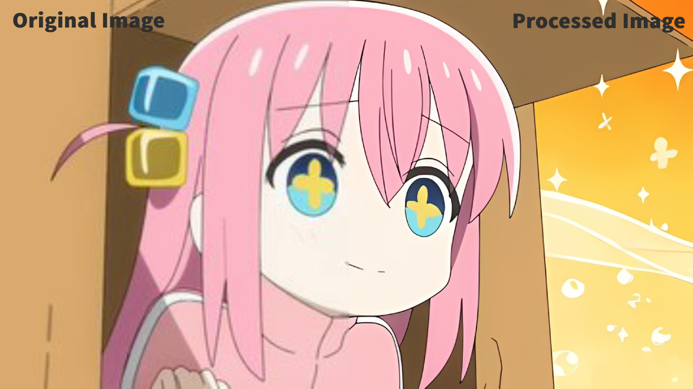
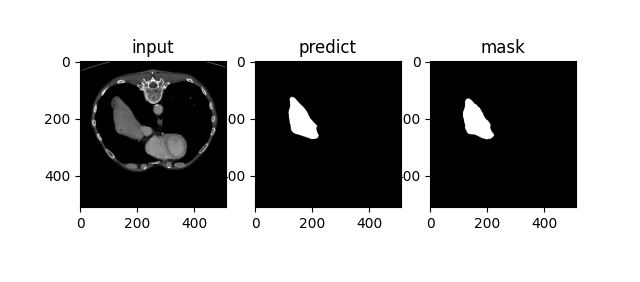
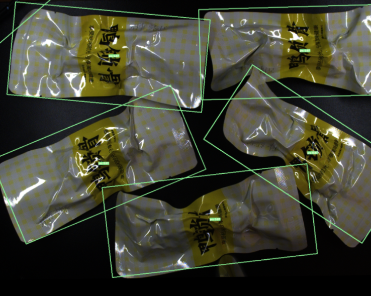
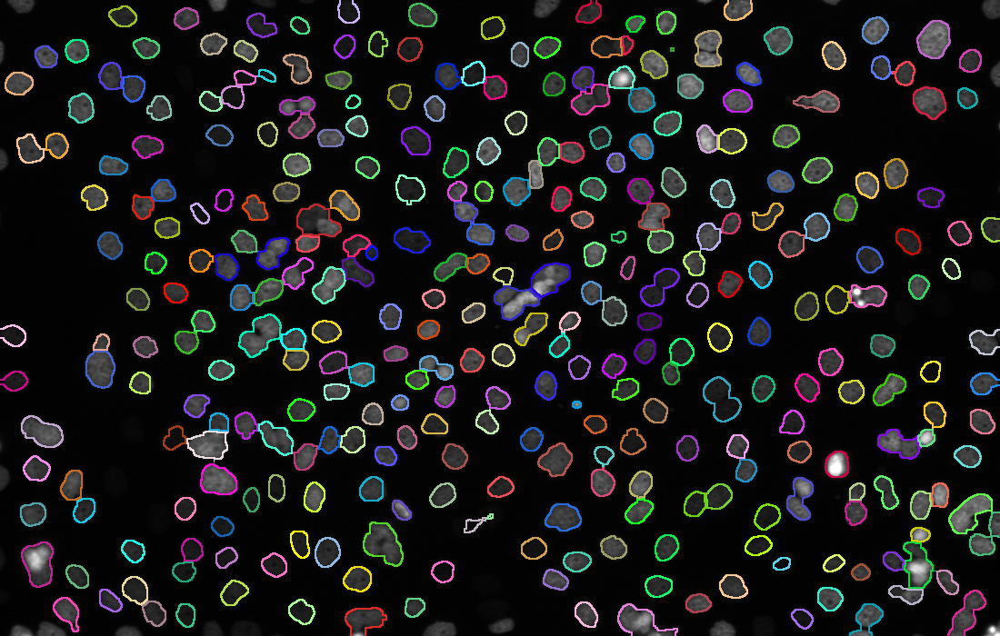
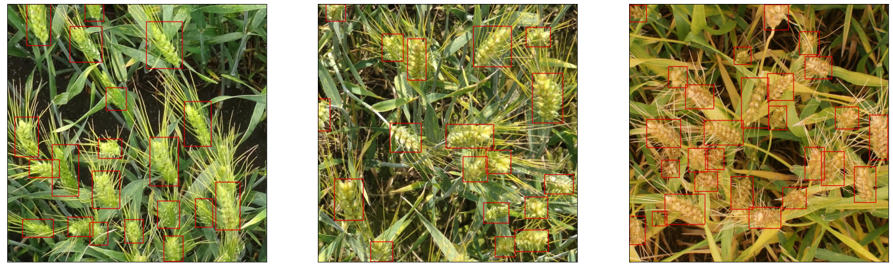

Projects
These are showcases and descriptions of my related projects.
Image Super Resolution Web App Based on Real-ESRGAN

Improved and optimized the model inference process and deployed it on the web, performing a
convenient image processing solution.

Medical Image Detection and Segmentation
Detect and segment the livers and lungs from medical images.

Rotate Object Detection Based on YOLOv5 and CSL
Locate the coordinate and rotation angle of assembly line product items and deliver the OONX model.

Research on Cell Detection Based on Computer Vision
Explored the identification, segmentation, tracking, and detection of mitosis for biological cells.

Global Wheat Detection using Faster R-CNN
Detect, locate, and visualize the wheat heads from the images.

Handwritten Chinese Optical Character Recognition

Go Back
Implemented offline handwritten Chinese character recognition using multiple deep models for
training and experimentation.